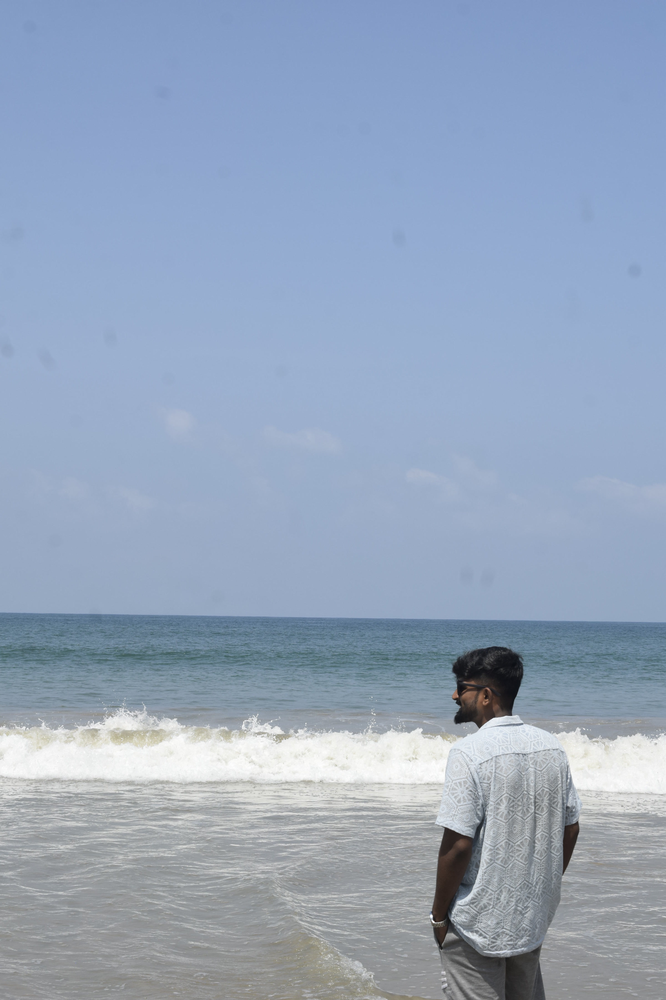
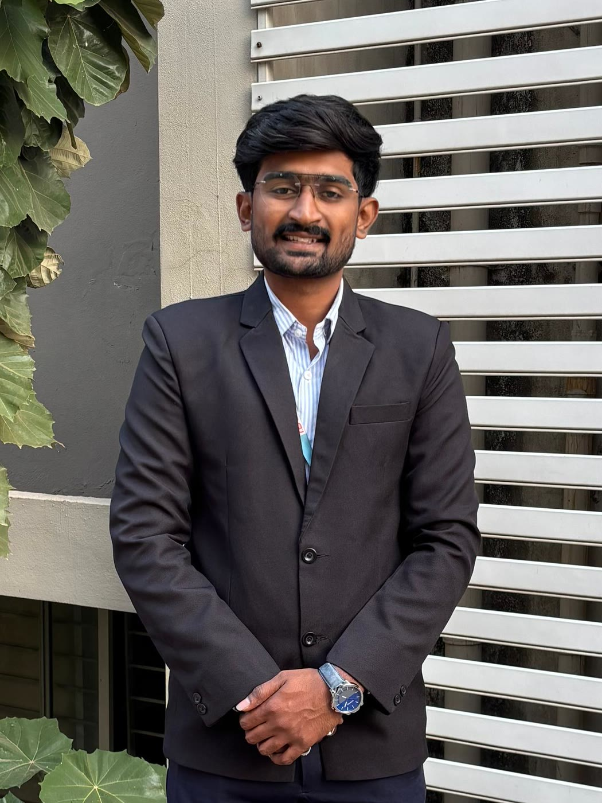
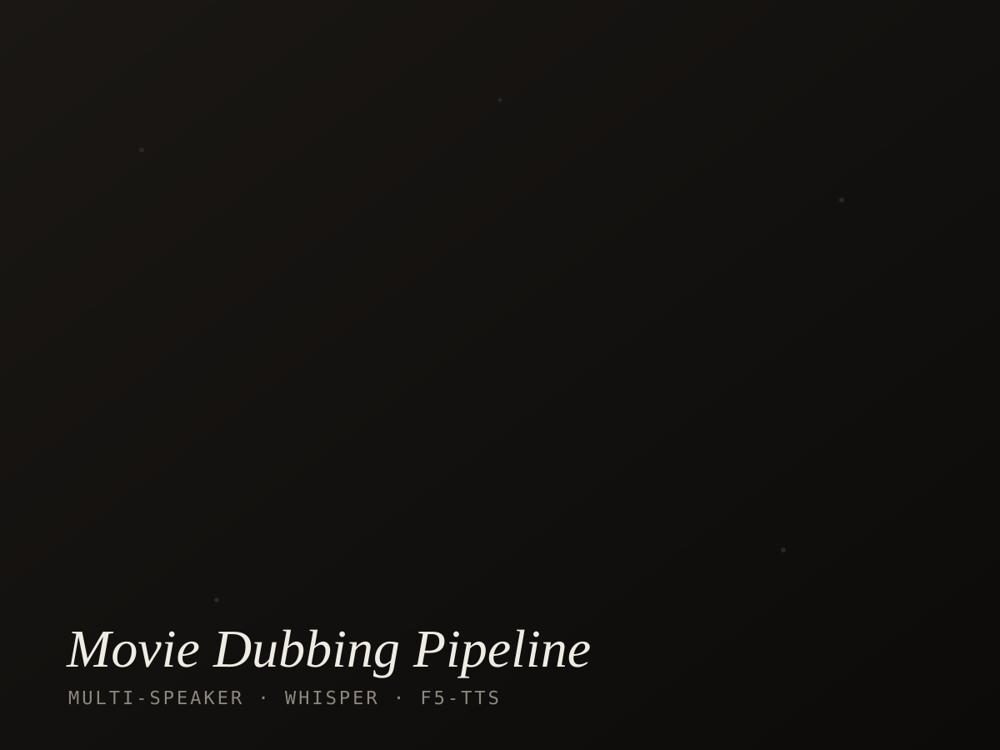
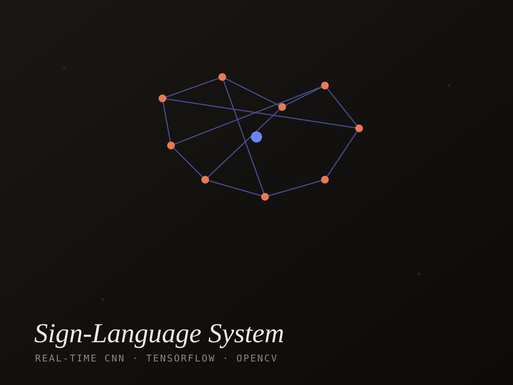
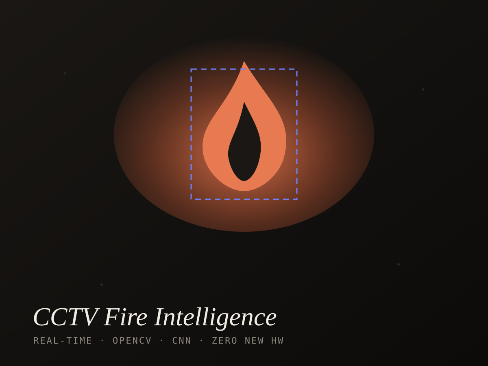
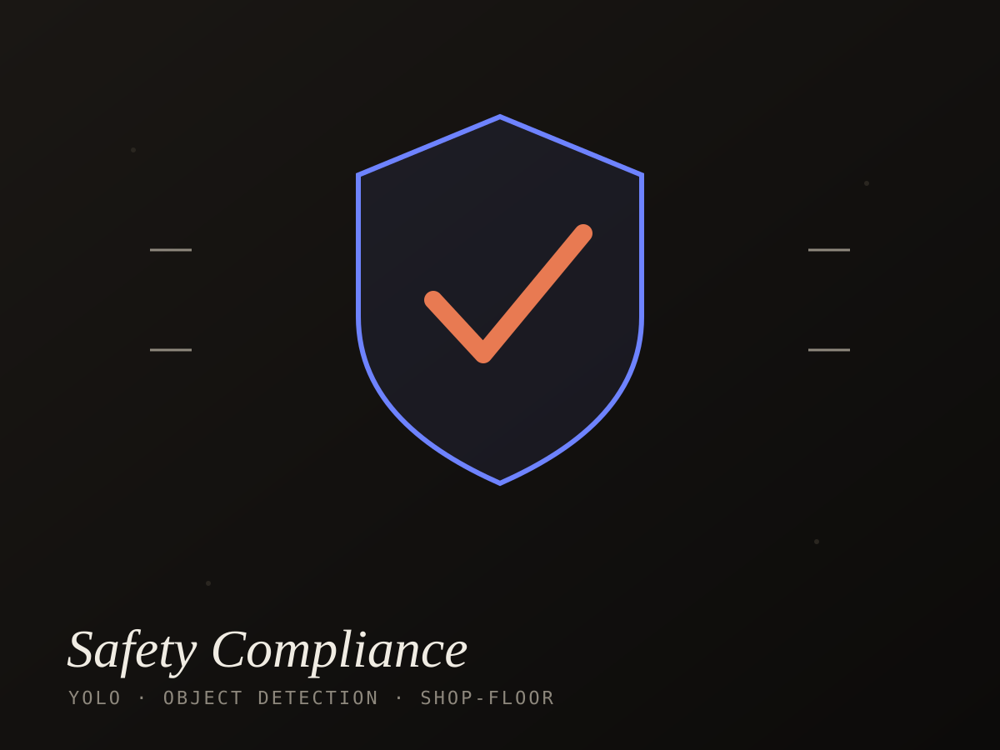
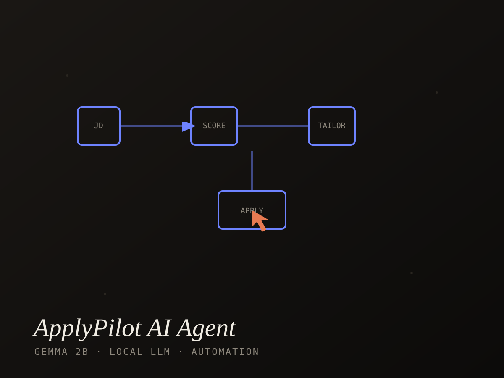

Connect · Live
Where I'm active
A direct line to my LinkedIn and a real, auto-updating GitHub contribution graph — not screenshots.


A Computer Science engineer who turns research-grade machine learning into production systems that ship — across Audio AI, computer vision, data analytics and embedded intelligence, end to end.
Currently a Founding AI Engineer at Framex Studio — part of a 5-person core team — building an end-to-end movie-dubbing pipeline: transcription → diarization → translation → voice-cloned TTS across Indian languages.
Built a real-time data-analytics pipeline for an EV digital twin — streaming multi-sensor telemetry into a cloud layer for anomaly detection, fleet-health analytics and predictive maintenance. First-author of a published ML research paper on assistive deaf-communication systems.
Core engineer on a 5-person team — owning the end-to-end movie-dubbing pipeline (ASR, speaker diarization, translation, voice-cloned TTS, lip-sync) across Indian languages, plus the full-stack delivery and Docker/deploy around it.
Built a real-time data pipeline ingesting sensor data over RS-485; processed and transformed hardware streams for cloud ingestion and live monitoring; maintained uptime across the firmware–backend–cloud stack.
A demo survives the meeting.
A system survives production.
— Anyone can call a model. The real work is keeping it honest at 3 a.m., under load, on real data. That's the only line of work I'm interested in.
Research earns the paper. Engineering earns the uptime. I do both.
Tools are just vocabulary. Judgment is knowing which word the problem actually needs.
Anyone can write one prompt. I build the operating layer around the model — operating manuals, a reusable design-DNA vocabulary and agent harnesses that make an LLM emit consistent, production-grade design & code on demand. The proof: USYNC, a self-indexing hub of 150+ AI-generated artifacts, each with a live inline preview.
Not screenshots. Each one shipped, measured, and still running.





Proof, not promises — peer-reviewed, presented, certified.
First-author paper on video + vibration feedback. GRENZE Journal of Engineering & Technology, GIJET Vol 11, Issue 2, 2025 — paper id 6348.
Read paperPresented "IoT-Enabled Two-Wheeler Accident Detection System" representing the institute (2024–25).
AWS Training & Certification, plus Introduction to Amazon EC2 (2025–26).
AWS Training & Certification — 2026.
Annasaheb Dange College of Engineering & Technology, Ashta · 2021–2025.
No model touched until the real constraint is named. That's where most pipelines quietly die.
Define the real constraint — latency, accuracy, hardware budget — before touching a model.
End-to-end pipelines, edge to cloud. Real data, real failure modes, no toy demos.
Measure the metric that matters — throughput, WER, timbre fidelity, uptime.
Production-ready, monitored, maintained. Cross-functional handoff that holds.
A direct line to my LinkedIn and a real, auto-updating GitHub contribution graph — not screenshots.
Bring the hard problem — the kind that doesn't fit in a single API call.